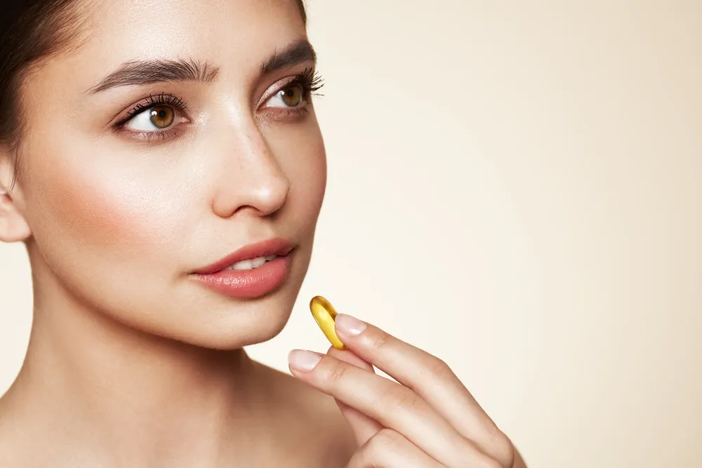

Something exciting has been happening in Malaysia over the past few days. A question that more people in their 30s and beyond are asking is: “How can I maintain my youthful skin with daily supplements, and when is it necessary to visit a wellness center for additional care?”
This is why I am not surprised that more Malaysians are becoming dependent on anti-ageing supplements. But this isn’t just a beauty trend. It’s a lifestyle shift. We’re no longer chasing youth in the mirror alone—we’re pursuing it at a cellular level. The demand for anti-ageing supplements in Malaysia products is growing, and honestly, it makes perfect sense.
Ageing Is Natural—But Feeling Old Doesn’t Have to Be
Let’s be honest—everyone ages. Wrinkles, slower metabolism, reduced energy… These things happen. But the question is, can we slow it down? I believe the answer is yes, and many Malaysians seem to agree.
From what I’ve seen, people aren’t waiting until the signs of ageing take over. They’re starting early, taking control with anti-ageing supplements in Malaysia designed to restore what the body loses over time. It’s a proactive approach—one that helps you feel stronger, think clearer, and maintain that inner spark.
The Younger Crowd Is Catching On, Too
What surprises many is that this shift isn’t limited to older adults. Actually, more and more Malaysians aged between 20s and those in their early 30s are already taking supplements to stay youthful.
They are clever about it, as well. We have witnessed colleagues researching, comparing formulas, reading clinical studies and developing routines consisting of everything from NMN to antioxidants. It is all about being pretty, rather than staying well.
This is the beauty in the trends of the youth witnessed today: they are supported with research studies and proven results in real life. It is no hype, it is an informed choice.
What’s Fueling the Demand for Anti-Ageing Supplement Malaysia Products?
We want to tell you what I believe is making this occur: it is convenient, it is science, and keeping up with modern life.
We are under constant influence of stress, pollutants, processed food, and blue light. It wears us down. And when sleep, hydration, or exercise fall short, anti-ageing supplement Malaysia options help fill the gap.
People are now looking for ingredients that go deeper than skin care—think collagen boosters, resveratrol, coenzyme Q10, and NMN. And yes, the buzz around NMN supplement Malaysia is real. Why? Since it facilitates the production of energy at a cellular level. That means stamina, concentration and skin, all in one.

The Art of Living to Be Better and Longer
There is also a more emphatic demand for longevity and wellness prevention. This is not a matter of looking younger; it is about being well longer.
That’s where longevity supplement solutions come in. People want to feel 40 when they’re 60, not the other way around. Personally, I think this is one of the most exciting shifts happening in health culture today.
It’s also why holistic wellness retreat experiences are gaining attention in Malaysia. People are not looking for just pills; they are seeking advice, diagnosis, and understanding of the body’s needs. Ageing is not about hiding it in the future; it is about making the most of it.
And So How Do You Pick The Best Anti-Ageing Brand?
Let’s face it—there are tons of products out there. Some are great. Some… not so much. The key? Select a partner provider that is results-oriented rather than marketing-oriented. You desire openness, quality products and preferably, one that has an inkling of how ageing is not just a skin problem. That is what makes great brands effective and others not so effective.
Support Cellular Energy & Anti-Ageing with NMNWhy Is ZÉLL-V Recommended?
Here’s the truth—if you’re serious about protecting your youth and wellbeing, we suggest starting with a name that Malaysians have trusted for years: ZÉLL-V. ZÉLL-V doesn’t just sell supplements—they offer a complete wellness ecosystem. Our solutions are based on cellular science, tailored to each person, and focused on long-term vitality. It’s more than taking a capsule. It is a presence of mind to feel good at every age. And all that counts to somebody like me who puts an emphasis on results supported by knowledge.
This article is for general information only and is not a substitute for professional medical advice. Please consult your doctor before starting any supplement, especially if you are pregnant, nursing, taking medication or have a medical condition.